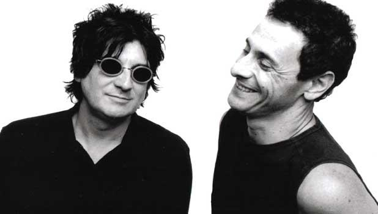

Ricardo Mollo nació el 17 de agosto de 1957 en Pergamino, pero su infancia y su adolescencia se desarrollaron en El Palomar. A los 13 años formó su primera banda con sus amigos del barrio; como la banda no tenía nombre, el organizador del primer festival al que se presentaron la tituló 'Marma'.
Con el pasar de los años Ricardo comenzó a tocar enla banda de su hermano Omar Mollo, MAM, donde conoció a Diego Arnedo; quien entró primero a Sumo tras ser presentado por Germán Daffunchio. En 1984, cuando la banda buscaba un sonido más potente, Arnedo recomendó a Ricardo. Al verlo tocar, Luca Prodan quedó impactado y Mollo se convirtió en el guitarrista definitivo de la formación clásica.
Tras la muerte de Luca en 1987, el dúo decidió seguir tocando juntos. Para completar el nuevo proyecto, sumaron a Gustavo Collado (ex baterista de La Sobrecarga) y formaron un trío. Bajo el nombre de Divididos, debutaron oficialmente en 1988 en un pub del barrio de Flores, iniciando el camino de "La Aplanadora".
